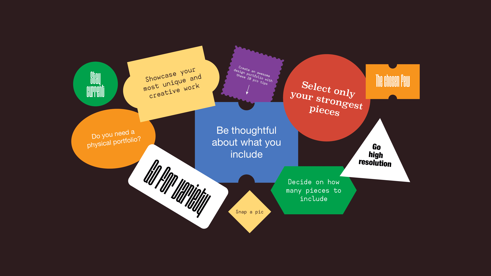

| Home | About | Portfolio | Contact |
|---|
|

Why it’s special: Robby incorporates an interactive experience into his portfolio. What it’s about: If you associate portfolios with a dry list of facts, this portfolio might surprise you. Robby found a novel way of displaying what was otherwise dry information — he laid out his portfolio site as a videogame that the visitor can actually play. This incredibly fun interactive design portfolio will make you scroll …Why it’s special: Robby incorporates an interactive experience into his portfolio. |
|
Why it’s special: Robby incorporates an interactive experience into his portfolio. What it’s about: If you associate portfolios with a dry list of facts,this portfolio might surprise you. Robby found a novel way of displaying what was otherwise dry information — he laid out his portfolio site as a videogame that the visitor can actually play. This incredibly fun interactive design portfolio will make you scroll … Why it’s special: Robby incorporates an interactive experience into his portfolio. |
| Copyright © 2019. All rights reserved. |